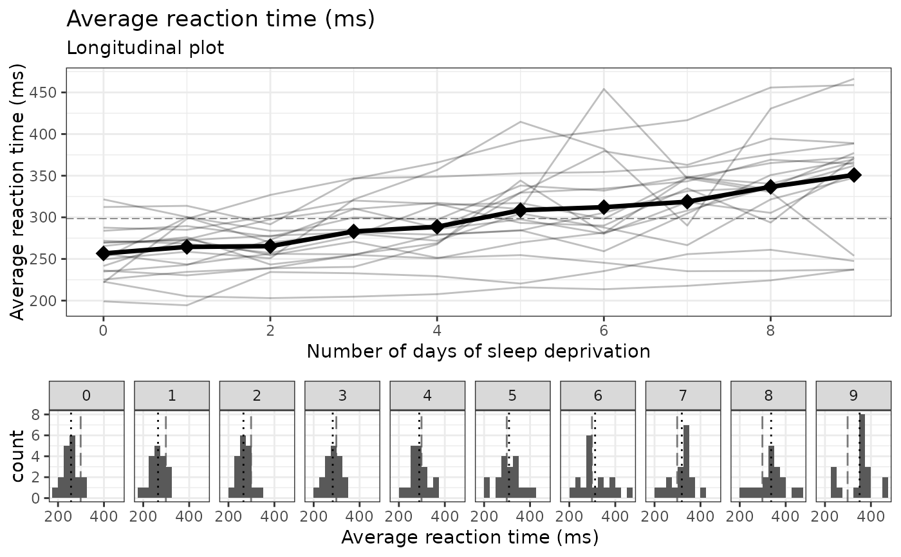
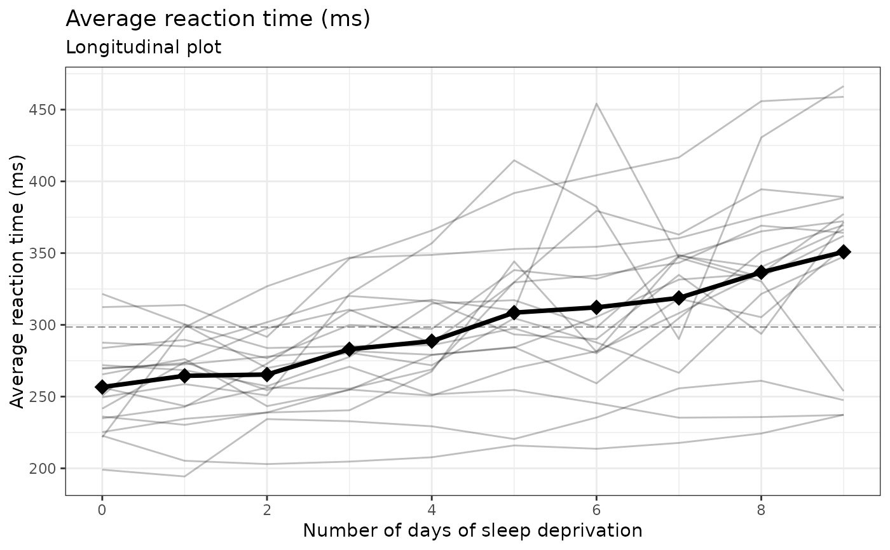
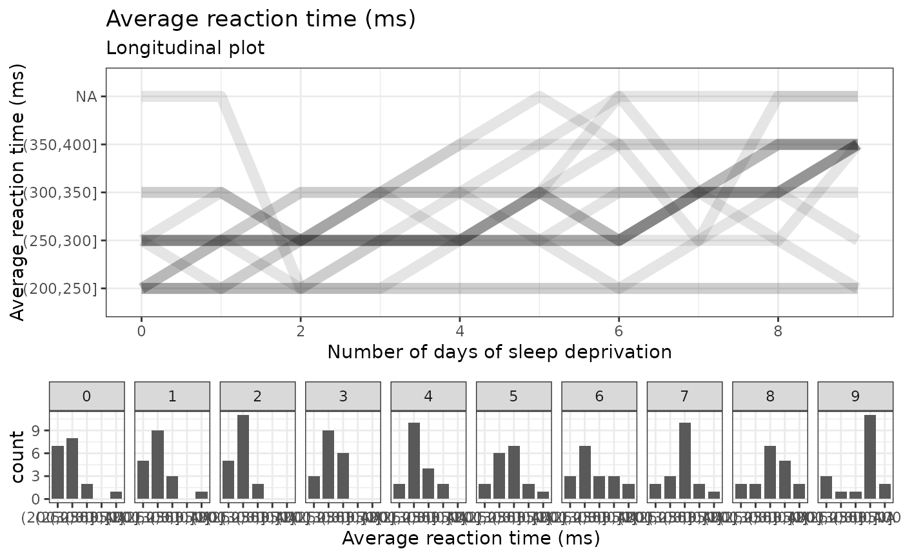

Longitudinal interaction plots
e_plot_longitudinal(
dat_plot = dat,
var_x_time = "x",
var_y_resp = "y",
var_ID = "ID",
var_group = NULL,
label_title = NULL,
label_subtitle = "Longitudinal plot",
label_x_time = NULL,
label_y_resp = NULL,
label_group = NULL,
x_scale_breaks = NULL,
y_scale_breaks = NULL,
sw_which_plots = c("line", "hist"),
hist_scale_breaks = NULL,
sw_group_reverse = FALSE,
hist_binwidth = NULL,
hist_align = c("center", "boundary")[1],
line_type_grand = c("blank", "solid", "dashed", "dotted", "dotdash", "longdash",
"twodash")[6],
line_type_group = c("blank", "solid", "dashed", "dotted", "dotdash", "longdash",
"twodash")[4]
)data.frame for plotting
x variable, usually a "time" variable
y response variable
ID variable for each repeated measures subject
If there are groups, this is the group variable.
plot title, defaults to y-variable
plot subtitle
x-axis label
y-axis label
group label
breaks for x-axis
breaks for y-axis
which plots to include, a subset of c("line", "hist")
breaks for histogram x-axis
TRUE/FALSE to reverse the order of groups
histogram binwidth
align "center" or "boundary"? If numeric non-negative responses, usually "boundary" is preferred.
Grand mean line type
Group mean line type
plot in ggplot grob format
# numeric
e_plot_longitudinal(
dat_plot = lme4::sleepstudy
, var_x_time = "Days"
, var_y_resp = "Reaction"
, var_ID = "Subject"
, var_group = NULL
, label_title = NULL
, label_subtitle = "Longitudinal plot"
, label_x_time = "Number of days of sleep deprivation"
, label_y_resp = "Average reaction time (ms)"
#, label_group = "Program"
, x_scale_breaks = seq(0, 9, by = 2)
, y_scale_breaks = seq(0, 1000, by = 50)
, sw_which_plots = c("line", "hist")
, hist_scale_breaks = NULL
#, sw_group_reverse = TRUE
, hist_binwidth = 25
, hist_align = c("center", "boundary")[2]
, line_type_grand = c("blank","solid","dashed","dotted","dotdash","longdash","twodash")[6]
, line_type_group = c("blank","solid","dashed","dotted","dotdash","longdash","twodash")[4]
)

# numeric, only line plot
e_plot_longitudinal(
dat_plot = lme4::sleepstudy
, var_x_time = "Days"
, var_y_resp = "Reaction"
, var_ID = "Subject"
, var_group = NULL
, label_title = NULL
, label_subtitle = "Longitudinal plot"
, label_x_time = "Number of days of sleep deprivation"
, label_y_resp = "Average reaction time (ms)"
#, label_group = "Program"
, x_scale_breaks = seq(0, 9, by = 2)
, y_scale_breaks = seq(0, 1000, by = 50)
, sw_which_plots = c("line", "hist")[1]
, hist_scale_breaks = NULL
#, sw_group_reverse = TRUE
, hist_binwidth = 25
, hist_align = c("center", "boundary")[2]
, line_type_grand = c("blank","solid","dashed","dotted","dotdash","longdash","twodash")[6]
, line_type_group = c("blank","solid","dashed","dotted","dotdash","longdash","twodash")[4]
)

# categorical
e_plot_longitudinal(
dat_plot = lme4::sleepstudy |>
dplyr::mutate(Reaction_cat =
cut(Reaction, breaks = seq(200, 400, by = 50))
)
, var_x_time = "Days"
, var_y_resp = "Reaction_cat"
, var_ID = "Subject"
, var_group = NULL
, label_title = NULL
, label_subtitle = "Longitudinal plot"
, label_x_time = "Number of days of sleep deprivation"
, label_y_resp = "Average reaction time (ms)"
#, label_group = "Program"
, x_scale_breaks = seq(0, 9, by = 2)
, y_scale_breaks = NULL
, sw_which_plots = c("line", "hist")
, hist_scale_breaks = NULL
#, sw_group_reverse = TRUE
, hist_binwidth = NULL
, hist_align = c("center", "boundary")[2]
, line_type_grand = c("blank","solid","dashed","dotted","dotdash","longdash","twodash")[6]
, line_type_group = c("blank","solid","dashed","dotted","dotdash","longdash","twodash")[4]
)
